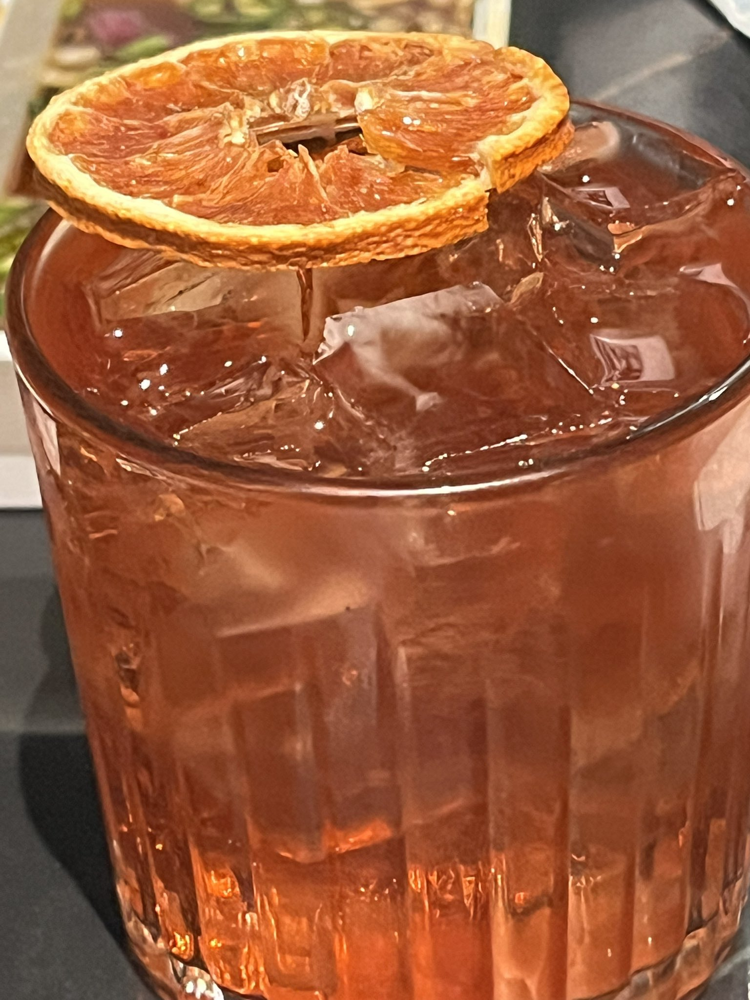

炽烈已极
@AnIncandescence
@vailisF 情人节快乐！尾师要开心呀ww

頻率偏移
@vailisF
情人节快乐，去年情人节之后对伊师产生了多余的感情，从2.14到4.17我可以过整个周年庆祝月，坏在OA乱了我的心情
和朋友一起出来喝酒吃饭了，果然和朋友待在一起聊天打闹心情会变好，生腌黑虎虾也很好吃
前段时间做了新的毛绒带出来拍照了，以及搓了一个我和Elaris伪死核乐队的logo，总之我们是“Eclipse https://t.co/AwSz3QAWKD